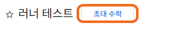
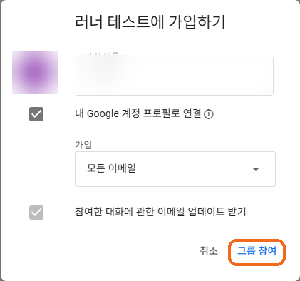
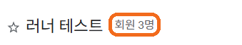
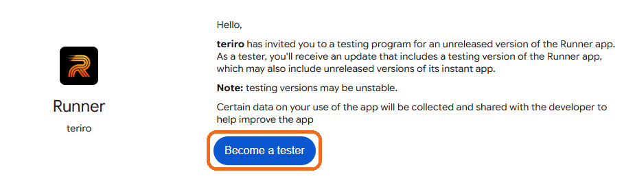
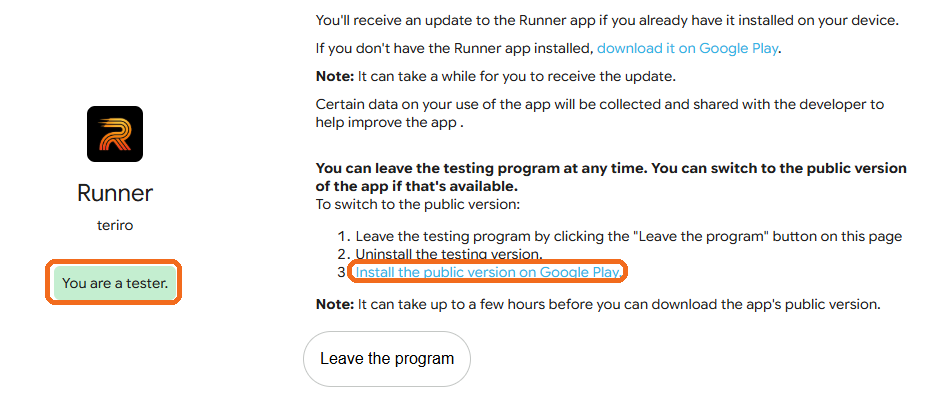

러너는 정식 출시 전 비공개 테스트 중이에요. 아래 순서대로 하면 1~2분이면 끝나요.





휴대폰에서는 Google 그룹 페이지가 잘 안 열려요. 크롬 메뉴(⋮)에서 "데스크톱 사이트"를 켜거나 PC에서 링크를 열어 주세요.
"초대 수락" 버튼이 안 보이면 지금 로그인한 계정이 초대받은 계정이 아니에요. 오른쪽 위 프로필을 확인하고, 시크릿 창에서 테스터로 등록한 Gmail로만 로그인해 다시 여세요. 그래도 없으면 개발자에게 Gmail 주소를 다시 알려 주세요.
가입 화면에서 이메일 수신 설정은 아무거나 골라도 돼요. "가입 요청을 보냈습니다"가 나오면 개발자 승인 후 가입돼요.
가입이 됐는지는 내 그룹에 그룹이 보이는지로 확인할 수 있어요.
테스터 목록에 있는 계정과 지금 로그인한 계정이 다른 경우가 가장 많아요. 브라우저 오른쪽 위 프로필에서 계정을 확인하세요. 크롬에 계정이 여러 개라면 시크릿 창을 열고 해당 Gmail로만 로그인한 뒤 링크를 다시 여세요.
휴대폰 Play 스토어 앱에 로그인된 계정이 다를 수 있어요. Play 스토어 → 오른쪽 위 프로필에서 테스터로 등록한 계정으로 바꾼 뒤 다시 링크를 여세요. 참여 직후엔 반영까지 몇 분~몇 시간 걸릴 수 있어요.
회사·학교 계정은 관리자가 막아 둔 경우가 있어요. 개인 @gmail.com 계정을 써 주세요.
카카오톡 등 앱 안에서 열리는 브라우저에서는 로그인이 안 될 수 있어요. 링크를 길게 눌러 복사한 뒤 크롬에 붙여 넣어 여세요.
기존 앱을 삭제하고 Play 스토어에서 다시 설치해야 테스터로 집계돼요.